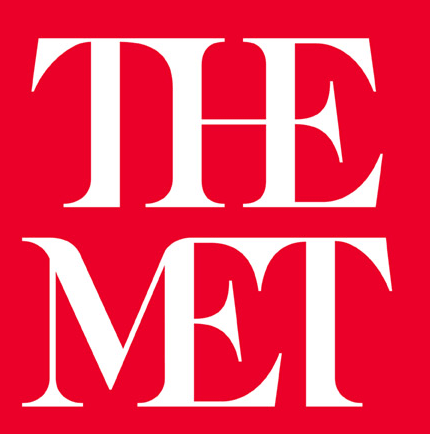

Fane Li Li - Assignment 2
Part I: Mobile Website Analysis
Sample Answers to List of Questions
What is the website about?
THE MET is a page for a museum.Is there a logo? If it has a logo where is it? Do you think it needs one, if it doesn't have one?
What is the navigation like? What does it consist of? Do you think it is clear and consice? Please describe why it is clear and concise.
How is the content on the website delivered?
Is the delivery of the content clear? If not what might you do to improve it?
What are the colors like? Do these work? and assist in the content delivery?
What is the type like? Are the paragraphs easy to read if there any?
Are there images? Do these fit on the site? Do they compliment the content?
Is there advertising on the web page?
List 3(min) Observations regarding the site that relate back to the principles of web design that is not covered by the questions above.
- The page is responsive. You can access to the page on smartphone, tablet and desktop.
There is a logo. The logo is located in the upper left corner of the page.
The navegation is good and clear. There are big images of the exhibitions linked with big headings. There are also a quiet big banner that shows information and images of some of the exhibitions, so the user will know what is about. The page also has a clear navegation bar linked to more information. The site has a footer to witn some additional information of the museum. It also has linked their social media like instagram, facebook, ttwitter, etc.
THE MET is a website for a museum so the make big images linked with big headings, so they are targeting people by visual content and simple and direct content.
I think the information that the page what to display is pretty clear. I feel that they had a good design for the content that they want to show.
The colors that they use are red, white, black, light grey. I think they are basic colors but they combine them so well that it looks elegant and clean.
The font that the use is a serief type look like Times New Roman. It is use for headings. And for the paragraphs it use a sans-serif and the font is like Helvetica. and it is use fot paragraphs.
Yes there are images and they are related to the museum and the image had a good size to the page. People will notice the images and it make it atractive.
There is no advertising on the page. This website has free of ads.
Part II: My Questions
- Question
- Question
- Question
- Question
- Question